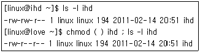
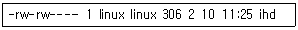
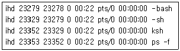
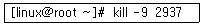
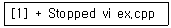
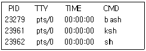
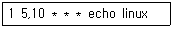
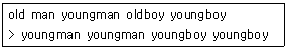

리눅스마스터-2급 (2011-06-11 기출문제)
1과목: 리눅스 운영 및 관리
1. 다음 중 리눅스의 파일시스템의 파일 개념으로 취급 하는 것이 아닌 것은?
- 일반파일
- 장치파일
- 디렉토리
- 실행파일
(정답률: 42%)

2. 다음 중 일반적인 리눅스의 디렉토리에 대한 설명으로 틀린 것은?
- / : 루트 디렉토리
- /lib : 라이브러리 저장 디렉토리
- /usr : 사용자 홈 디렉토리
- /usr/local : 사용자 프로그램 설치 디렉토리
(정답률: 72%)
3. 파일의 권한을 사용자에게만 읽기, 쓰기, 실행을 나타내는 모드로 올바른 것은?
- rwxrwxrwx
- rwx------
- ---rwx---
- ------rwx
(정답률: 80%)
4. 다음과 같은 결과를 얻기 위해 빈칸에 들어갈 내용으로 올바르지 않은 것은?

- 644
- g-w
- g=r
- a-w
(정답률: 54%)
5. 다음 중 새로 생성되는 파일의 권한을 제한하는 명령어는?
- chmod
- chgrp
- umask
- chown
(정답률: 75%)
6. 다음 ihd 파일 내용의 설명으로 올바르지 않은 것은?

- 파일의 이름은 ihd 이다.
- linux 그룹(group)은 쓰기가 가능하다.
- ihd 파일이 속한 그룹은 linux 이다.
- 다른사용자(other)는 ihd파일의 실행이 가능 하다.
(정답률: 87%)
7. 다음 중 리눅스 파일시스템에 대한 설명으로 옳지 않은 것은?
- 리눅스는 ufs, ext3, FAT16/32, nfs, iso9660등의 파일시스템들의 사용이 가능하다.
- 파일명은 연속적인 문자, 숫자 및 특정 구두점의 단순한 열로 구성된다.
- 파일명은 대/소문자를 구분하지 않는다.
- 파일의 속성을 변경하면 실행 파일로 사용할 수 있다.
(정답률: 78%)
8. 다음 중 새로운 하드디스크를 추가하는 과정의 순서가 올바른 것은?
- 파티션생성 - 파일시스템생성 - 마운트
- 파티션생성 - 마운트 - 파일시스템생성
- 파일시스템생성 - 파티션생성 - 마운트
- 파일시스템생성 - 마운트 - 파티션생성
(정답률: 70%)
9. 파일 시스템을 점검하고 수리하기 위한 명령어는?
- fsck
- findfs
- mount
- mkfs
(정답률: 86%)
10. 파일 시스템의 사용량과 남은 용량을 확인하기 위한 명령어는?
- fsck
- mkfs
- df
- du
(정답률: 68%)
11. 쉘(Shell)에 대한 다음 설명으로 틀린 것은?
- 리눅스에서 쉘은 운영체제와 사용자가 대화하는 중간창구의 역할을 담당한다.
- 리눅스에서는 여러 가지 쉘을 선택하여 사용할 수 있다.
- 사용자의 쉘을 변경하여 쓰고자하는 경우에 반드시 시스템을 리부팅 하여야만 한다.
- 사용자가 시스템에 로그인(login)하게 되면 각각의 사용자에게 쉘이 부여된다.
(정답률: 76%)
12. 터미널 설정 관련 명령중 현재 터미널의 전체 설정 값을 확인하는 stty 명령 옵션으로 알맞은 것은 무엇인가?
- a
- e
- t
- u
(정답률: 71%)
13. 현재작업중인 디렉토리의 절대경로를 확인하고자 할 때 사용하는 명령어는 무엇인가?
- cd
- mv
- pwd
- cp
(정답률: 83%)
14. 자신이 작성한 프로그램이 저장된 /ihd/pgm 경로를 기존의 PATH 환경변수에 추가하고자 할 때 bash 쉘에서 사용하는 명령으로 알맞은 것은?
- PATH=$:/ihd/pgm
- PATH=$PATH:/ihd/pgm
- PATH=PATH:/ihd/pgm
- PATH=/ihd/pgm
(정답률: 87%)
15. 다음은 bash 쉘에서 rm 명령으로 파일삭제시 발생되는 실수를 방지하기 위해 확인메시지를 표시하도록 alias를 설정하는 명령으로 올바른 것은?
- alias rm = 'rm -i'
- alias rm 'rm -i'
- alias rm := 'rm -i'
- alias 'rm -i'
(정답률: 78%)
16. bash 쉘에서 사용되는 특수문자 중 명령을 백그라운드로 실행하고자 하는 경우 사용하는 것은?
- >>
- $
- &
- #
(정답률: 85%)
17. 쉘(Shell)의 환경변수에 대한 설명으로 잘못된 것은?
- HOME은 사용자의 홈 디렉토리를 설정한다.
- PS1은 프롬프트의 모습을 정리하는 1차 쉘 프롬프트이다.
- USER는 현재 사용하는 유저의 password를 지정하는 용도로 사용된다.
- TERM은 터미널 데이터베이스에 지정되는 대로 터미널 유형의 이름을 설정한다.
(정답률: 66%)
18. 리눅스 시스템에서 사용자의 명령을 시스템에 전달하기 위하여 다음과 같은 단계를 거쳐야 한다. 이때 순서가 바르게 정의된 것은?
- Terminal - Device Driver - Shell - Linux Kernel
- Terminal - Shell - Linux Kernel - Device Driver
- Terminal - Linux Kernel - Shell - Device Driver
- Terminal - Shell - Device Driver - Linux Kernel
(정답률: 46%)
19. 다음 중 프로세스의 설명으로 틀린 것은?
- init 프로세스 번호는 1이다.
- fork 호출을 통하여 자신의 복사본 프로세스를 만든다.
- exec 호출을 통하여 자신의 다른 프로그램을 실행하는 새로운 프로세스로 대치한다.
- 자식 프로세스가 자기 환경을 변경할 때 부모 프로세스로 전달된다.
(정답률: 63%)
20. 다음은 프로세스의 정보를 확인하는 내용에 대한 설명 중 틀린 것은?

- 프로세스의 소유자는 ihd 이다.
- -bash의 자식 프로세스는 -sh 이다.
- ksh 프로세스의 부모 프로세스는 -sh 이다.
- ps -f 의 부모 프로세스의 번호는 23353 이다.
(정답률: 72%)
21. 다음은 프로세스간의 통신을 위한 시그널(signal) 번호의 연결이 옳지 않은 것은?
- SIGHUP - 0
- SIGINT - 2
- SIGSTOP - 19
- SIGKILL - 9
(정답률: 57%)
22. 다음 명령어에 대한 설명으로 알맞은 것은?

- 프로세스 번호가 2937을 재시작 한다.
- 프로세스 번호가 2937을 background 작업으로 전환 한다.
- 프로세스 번호가 2937을 종료 시킨다.
- 프로세스 번호가 2937을 foreground 작업으로 전환 한다.
(정답률: 90%)
23. 다음 메시지에 대한 설명으로 틀린 것은?

- vi ex.cpp 라는 프로세스가 suspend 되었다.
- vi ex.cpp를 실행중에 CTRL-z를 입력했다.
- 다시 실행 하려면 “fg vi ex.cpp" 입력한다.
- vi ex.cpp의 작업번호는 1이다.
(정답률: 57%)
24. telnet을 서비스해주는 데몬(deamon)의 방식으로 올바른 것은?
- zombie 방식
- standalone 방식
- INET 방식
- Point to Point 방식
(정답률: 47%)
25. 시스템의 프로세스 상태, CPU 정보, 메모리 사용량 등을 확인할 수 있는 명령어는?
- nice
- find
- stat
- top
(정답률: 81%)
26. ps 명령어를 실행 후 다음과 같은 결과를 보고 ksh 프로세스를 중지하기 위한 명령으로 올바른 것은?

- killall -9 23279
- kill -19 ksh
- kill -9 23961
- killall -9 23961
(정답률: 81%)
27. 다음 중 시스템의 프로세스 스케쥴링(scheduling) 우선순위를 변경하는 nice 명령어의 조정수치(adjustment) 중 우선순위가 높은 것은?
- -19
- -20
- 20
- 19
(정답률: 60%)
28. crontab의 내용에 대한 설명이 알맞은 것은?

- 매일 5시 1분과 10시 1분에 echo linux 명령을 실행한다.
- 매일 1시 5분과 10분에 echo linux 명령을 실행한다.
- 매월 1일 5시와 1일 10시 정각에 echo linux 명령을 실행한다.
- 매년 5월 1일과 10월 1일에 echo linux 명령을 실행한다.
(정답률: 73%)
29. 다음 중 리눅스에서 지원하는 에디터의 종류로 보기 어려운 것은?
- lex
- emacs
- pico
- vi
(정답률: 87%)
30. vi 편집기를 이용한 편집 중 저장하지 않고 강제 종료 하는 명령어는 무엇인가?
- :w!
- :e!
- :q!
- :l!
(정답률: 92%)
31. vi 편집기를 이용한 문서편집 시 명령모드에서 커서 이동에 대한 설명이 틀린 것은?
- j - 한줄 아래
- k - 한줄 위
- l - 한칸 오른쪽
- m - 한칸 왼쪽
(정답률: 67%)
32. 파일의 내용을 vi 편집기로 읽기전용(read-only) 모드로 열고자 할 때 사용하는 옵션은?
- -r
- -R
- -v
- -V
(정답률: 59%)
33. vi 편집기 Ex(=last line mode)모드에서 15라인에서 60라인 까지를 삭제하고자할 때 적절한 명령어는?
- dd 15 to 60
- 15 to 60d
- 15,60d
- dd 15,60
(정답률: 44%)
34. vi편집기에서 다음과 같이 'old' 라는 문자를 'young'라는 문자로 변경하려 할때 사용하는 편집 명령어는?

- :s/old/young/g
- :s/old/young
- :s/young/old/g
- :s/young/old
(정답률: 62%)
35. 리눅스에서 사용할 수 있는 압축프로그램으로 보기 어려운 것은?
- compress
- gzip
- bzip2
- yacc
(정답률: 86%)
36. 다음 중 리눅스 소프트웨어 설치 및 삭제와 관련된 명령이 아닌 것은?
- install
- rpm
- dpkg
- yum
(정답률: 52%)
37. 다음 중 home.tar.gz 이란 파일을 tar 명령으로 압축해제하려고 한다. 알맞은 명령어는 무엇인가?
- tar jcvf home.tar.gz /home
- tar zxvf home.tar.gz
- tar zcvf home.tar.gz /home
- tar jxvf home.tar.gz
(정답률: 65%)
38. 패키지 파일명이 kernel-2.6.27-117.i586.rpm이다. 파일명으로 유추해볼 수 있는 것에 대한 설명으로 잘못된 것은?
- 커널 패키지의 버전은 2.6.27이다.
- 커널 패키지는 117번의 패치가 이루어졌다.
- 커널 패키지는 i586 이상의 CPU 플랫폼에서 작동된다는 것을 뜻한다.
- 커널 패키지는 debian에서 패키징 되었다.
(정답률: 69%)
39. debian 패키지 관리시스템에 대한 설명으로 잘못된 것은?
- 패키지는 .deb 확장자로 끝나고 dpkg 툴을 사용하여 패키지를 설치한다.
- 패키지명-버전-debian-revision-number.deb의 형식을 따른다.
- dpkg는 프로그램 설치와 업그레이드를 담당하고 dpkr이 제거를 담당한다.
- dpkg는 종속성을 점검하여 필요한 모든 구성 요소가 설치되어 있는지 확인하고 필요하면 설치해준다.
(정답률: 53%)
40. 다운받은 패키지에서 ihd 파일을 포함하고 있는 것을 확인하고자 할 때 사용하는 방법은?
- #rpm -qi ihd
- #rpm -qs ihd
- #rpm -qf ihd
- #rpm -qc ihd
(정답률: 45%)
41. RPM 으로 설치한 패키지에 대해 rpm -V 옵션으로 점검 시 점검상태 표시문자를 나타낸 것 중 잘못된 것은?
- S : 파일 크기
- L : 로지컬 사이즈
- U : 사용자
- D : 장치
(정답률: 56%)
42. tar cvf - ihd | gzip > ihd.tar.gz 명령에 대한 설명으로 올바른 것은?
- tar 명령 사용 시 만들 파일 명 대신 ‘-’를 쓰면 파일명을 ihd 로 쓰겠다는 의미이다.
- gzip 은 ihd 가 묶여진 것을 입력으로 받아 압축을 실행한다.
- ihd.tar.gz은 ihd 가 압축된 것을 tar 로 묶은 것이다.
- 에러가 발생되면 ihd.tar.gz 에 결과가 저장된다.
(정답률: 54%)
43. 리눅스에서 윈도우즈와 공유해서 프린터를 사용하기 위해 필요한 서비스는?
- telnet
- ssh
- JetDirect
- Samba
(정답률: 83%)
44. 리눅스의 주변장치 및 디바이스 드라이버 등의 파일들이 있는 디렉토리는?
- /
- /dev
- /home
- /lib
(정답률: 86%)
45. 프린터 큐에 있는 인쇄 작업을 취소하기 위해 사용하는 명령어로 알맞은 것은?
- lpc
- lpq
- lprm
- pr
(정답률: 68%)
46. 리눅스에서 프린터 큐로 사용하기 위한 임시(spool)디렉토리 위치로 알맞은 것은?
- /etc/spool/lp
- /dev/spool/lpd
- /lib/spool/lpd
- /var/spool/lpd
(정답률: 48%)
47. 리눅스 주변장치를 사용하기 위해서 커널에 현재 적재된 모듈을 나열 해주는 명령어는?
- addmod
- insmod
- lsmod
- viewmod
(정답률: 80%)
48. 다음 중 리눅스 장치 디바이스 파일이 아닌 것은?
- /dev/lp0
- /dev/fd0
- /dev/sda
- /dev/sound
(정답률: 50%)
2과목: 리눅스 활용
49. X윈도우 특징에 대한 설명으로 틀린 것은?
- 네트워크 기반의 그래픽 환경이다.
- 사용자가 원하는 모양의 인터페이스를 만들 수 없고, 몇 가지 정해진 인터페이스만 사용 가능 하다.
- 프로그램 작성시 많은 종류의 컴퓨터에서 구동 될 수 있을 정도로 이식성이 뛰어나다.
- 디스플레이 장치에 의존적이지 않다.
(정답률: 66%)
50. X 서버와 X 클라이언트의 상호작용은 메시지 교환을 통해 이루어지는데, 이 메시지 형태와 사용법을 무엇이라 하는가?
- X protocol
- X clients
- X modmap
- X resources
(정답률: 73%)
51. 다음 중 XF86Setup 프로그램으로 설정 할 수 없는 것은?
- 프린터
- 마우스
- 그래픽카드
- 키보드
(정답률: 44%)
52. QT 라이브러리를 기반으로 노르웨이 Troll Tech사에서 개발한 X 윈도우 데스크톱 환경은 무엇인가?
- GNOME
- KDE
- TASKBAR
- DESKTOP
(정답률: 70%)
53. KDE에서 웹브라우저 및 파일관리 기능을 담당하는 응용프로그램을 무엇이라 하는가?
- Searcher
- Filelist
- Konqueror
- Minetype
(정답률: 71%)
54. KDE의 종료에 관련된 설명 중 틀린 것은?
- 로그아웃하기 : K 버튼을 눌러 가장 아래 메뉴의 ‘로그아웃’을 클릭한다.
- 데이터 저장 확인하기 : 로그아웃할 때의 상태를 응용프로그램들이 기억하여 그 응용프로그램의 중요한 데이터의 저장여부를 확인 한다.
- 세션관리기능 : 로그아웃할 당시 열려있던 응용프로그램들을 사용자가 다음 로그인시 기억하여 그대로 다시 열어주는 기능을 갖고 있다.
- 강제 종료 : Ctrl + Alt + Del 키의 조합으로 X 윈도우를 강제 종료시킬 수 있다.
(정답률: 64%)
55. X 윈도우의 형태를 갖추어 주는 프로그램으로 윈도우의 크기변화, 아이콘화, 윈도우 테두리의 외양을 다루는 등의 기능을 제공하는 것을 무엇이라 하는가?
- 커널
- 그래픽인터페이스
- 윈도우 매니저
- 쉘
(정답률: 73%)
56. 다음 X윈도우의 멀티미디어 프로그램 중 포토 리터칭과 이미지 합성 및 제작을 위한 프로그램으로 알맞은 것은?
- Button Bar
- GIMP
- WinList
- GNOME
(정답률: 78%)
57. 근거리 통신망 LAN에 대한 설명으로 틀린 것은?
- LAN은 건물이나 공장, 학교 등 지역적으로 제한된 영역에 한정된다.
- 10Mbps～155Mbps의 전송속도로 데이터를 송수신 할 수 있다.
- 전용 디지털 통신망으로 구성되며 WAN 보다 속도가 느리다.
- 낮은 오류율에 의한 신뢰성 있는 고속데이터 전송이 가능하다.
(정답률: 69%)
58. 다음 중 LAN의 분류 중 토폴로지(Topology)의 종류가 아닌 것은?
- 스타 토폴로지
- 종단형 토폴로지
- 버스형 토폴로지
- 링 토폴로지
(정답률: 85%)
59. LAN의 각 클라이언트가 동시에 통신회선을 사용할 때 발생할 수 있는 충돌을 막아주는 프로토콜을 무엇이라 하는가?
- CSMA
- TCP/IP
- FDDI
- BACKBONE
(정답률: 67%)
60. 다음 중 WAN(Wide Area Network)에서 주로 사용하는 프로토콜로 가장 알맞은 것은?
- IPX
- X.25
- AppleTalk
- CDMA
(정답률: 55%)
61. 다음 중 네크워크를 통해 전송하기 쉽도록 자른 데이터의 전송단위를 가리키는 것은?
- 패킷(packet)
- 데이터(data)
- 프레임(frame)
- 블록(block)
(정답률: 79%)
62. 다음 중 프로토콜의 기본 구성 요소가 아닌 것은?
- 구문(Syntax)
- 의미(Semantics)
- 타이밍(Timing)
- 리피터(Reapter)
(정답률: 82%)
63. 다음 프로토콜의 기본 기능이라 할 수 없는 것은?
- 패킷교환
- 에러제어
- 인터럽트
- 데이터 대열의 분할
(정답률: 19%)
64. 다음 LAN 통합을 위한 통신장비 중 브리지에 대한 설명으로 틀린 것은?
- 두 개의 LAN을 상호 접속해 주는 통신망 연결장치 이다.
- LAN을 상호 접속할 수 있도록 하는 통신망 연결 장치로서 OSI 참조 모델의 응용계층에서 동작한다.
- 리피터와는 달리 통신량 조정 기능을 가지고 있다.
- 통신망의 범위와 길이를 확장할 경우 및 통신망에 더욱 많은 컴퓨터들을 연결할 때 사용 한다.
(정답률: 51%)
65. 다음 중 TCP/IP 내부 스택 중 인터넷 계층에만 속하는 프로토콜로 짝지어진 것 중 알맞은 것은?
- TELNET, FTP
- TCP, UDT
- IP, ICMP, ARP
- FDDI, 이더넷
(정답률: 58%)
66. 다음 OSI 모델의 계층 중 사용자 또는 응용프로그램이 네트워크에 접근할 수 있도록 사용자 인터페이스를 제공하는 계층은?
- 세션계층
- 표현계층
- 응용계층
- 전송계층
(정답률: 51%)
67. TCP/IP 프로토콜의 구조에서 IP의 기능에 대한 설명 중 틀린 것은?
- 패킷들의 전송흐름을 제어
- 데이터그램의 분열과 재배열
- IP Address의 정의
- 데어터그램 라우팅의 역할
(정답률: 36%)
68. 다음 TCP/IP 내부스택의 Application 계층에서 제공되는 사용자 서비스와 그에 대한 설명이 잘못 짝지어진 것은?
- telnet : 네트워크를 통한 원격로그인을 제공 한다.
- FTP : 양방향 파일 전송에 사용된다.
- DNS : 전자 메일을 전달한다.
- NFS : 네트워크상의 다양한 호스트들이 파일을 공유할 수 있도록 해준다.
(정답률: 81%)
69. 32비트의 숫자로 구성된 IP 주소를 상대적으로 기억하기 편한 영문자로 표현된 주소로 매핑시켜 주는 것을 무엇이라 하는가?
- WWW
- DNS
- USENET
(정답률: 82%)
70. 다음 중 Mozilla의 차세대 웹브라우저로서, 윈도우즈와 리눅스용 오픈소스 웹브라우저로 탭 브라우징이나 Pop-up 광고 등의 차단기능이 Internet Explorer보다 많은 장점이 있는 것은?
- 컹커러(Konqueror)
- 오페라(Opera)
- 파이어폭스(Firefox)
- 네스케이프(Netscape)
(정답률: 70%)
71. 다음 중 인터넷이 연결된 컴퓨터의 사용자라면 어디서나 서로 편지를 주고받을 수 있는 서비스를 무엇이라 하는가?
- FTP
- Opera
- Telnet
(정답률: 87%)
72. 다음 중 인터넷 회선을 이용하여 음성 신호를 전달하는 서비스를 무엇이라 하는가?
- IPTV
- Internet phone
- EPIC
- IRC
(정답률: 68%)
73. 다음 중 IRC 클라이언트 프로그램의 종류가 아닌 것은?
- BitchX
- EPIC
- Xchat
- slrn
(정답률: 41%)
74. 다음 중 전화선을 이용 인터넷서버에 직접 접속하여 인터넷 서비스를 이용하는 프로토콜을 무엇이라 하는가?
- ISDN
- terminal emulator
- modem
- SLIP/PPP
(정답률: 42%)
75. 다음 중 네트워크 장치를 설정하기 위해 필요한 주소가 아닌 것은?
- IP Address
- Netmask Address
- Gateway Address
- Modem Address
(정답률: 82%)
76. 네트워크 인터페이스를 설정하기 위하여 사용하는 리눅스 명령어로 알맞은 것은?
- cp
- ifconfig
- mv
- cat
(정답률: 83%)
77. 다음 중 시스템을 동작시키는 소프트웨어를 하드웨어에 내장하여 특수한 기능만을 수행하게 되는 컴퓨터시스템을 무엇이라 하는가?
- 와이브로 시스템
- Wi-Fi 시스템
- 임베디드 시스템
- 클러스터링 시스템
(정답률: 80%)
78. 다음 중 임베디드 시스템의 예로서 가장 적절하지 않은 것은?
- 플레이스테이션
- 전자수첩
- 스마트폰
- 개인용컴퓨터(PC)
(정답률: 56%)
79. 다음 중 리눅스 클러스터의 특징에 대한 설명으로 틀린 것은?
- 리눅스가 다양한 CPU와 device를 지원하기 때문에 클러스터 개념 자체를 쉽게 여러 가지 형태로 구현 가능하다.
- open source로 사용자가 직접 필요에 맞게 클러스터를 제작 가능하다.
- 클러스터의 각 운영체제를 리눅스로 사용이 가능하다.
- 하드웨어에 상관되는 부분이 많이 종속적이며 아키텍처 자체에 대한 호환성이 없다.
(정답률: 80%)
80. 다음 중 기본적으로 10m이내의 범위 안에서 케이블 없이 무선으로 연결되어 통신하고자 하여 개발된 단거리 무선데이터 통신 기술을 무엇이라 하는가?
- 블루투스
- IPTV
- 클러스터
- 와이브로
(정답률: 83%)